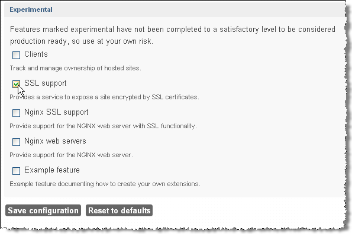
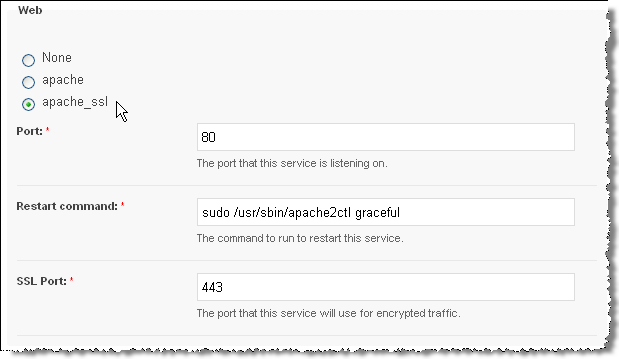
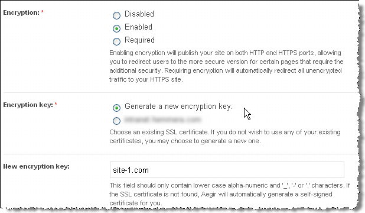

Using SSL
SSL support was significantly improved in Aegir 3.0 and subsequent releases have further refined the SSL functionality. Aegir now supports SNI by default, making assignment of IP addresses unnecessary.
Here are the current steps to configure SSL support in Aegir and apply it to your web sites.
Prepare your server
Open SSL port
Make sure port 443 is open for SSL traffic. That is, ensure no firewall rules or other configuration is blocking traffic to port 443.
Install SSL
From the command line, install SSL software for your web server. On Debian/Ubuntu you can use:
# apt-get install openssl
Enable SSL
Enable SSL support and restart your webserver at this point.
# a2enmod ssl
# service apache2 restart
Enable SSL support in Aegir
You have to enable SSL support in Aegir as it is off by default.
- Visit /admin/hosting/features to get to the Aegir features page.

- Click on Experimental to reveal experimental features experimental features of Aegir 
- Check SSL support
- Click Save configuration
Configure a web server
You next need to enable SSL on a web server.
- Click on the Servers tab
- Click on the server for which you wish to enable SSL support
- Click Edit to change the server configuration
- (Optional, but highly recommended) Remove any IP addresses assigned to the server. This will activate SNI, which is supported in all modern browsers.
- Click apache_ssl. This will reveal an additional field: SSL port, which should be already populated with 443. 
- Click Save. This will trigger a verify task on the server followed by verify tasks on all platforms that are associated with that server.
If all goes well you will see the following changes in your Aegir file system structure: a new /var/aegir/config/ssl.d directory and a new /var/aegir/config/server_master/ssl.d directory. The /var/aegir/config/ssl.d directory is where you will be able to manipulate SSL keys and certificates, for example by importing commercial SSL certificates or generating a new key. Do not manually edit the /var/aegir/config/server_master/ssl.d directory as changes to that directory will be overwritten when the server or site are verified.
Configure a site
You can now finally enable SSL on any sites that are installed on any platforms associated with the server where we enabled SSL.
- Browse to hosting/c/example.com
- Click Edit to change the site configuration
- Choose the type of Encryption required and the Encryption key (see the explanatory notes below each option). NOTE: Alternatively, you may specify a directory under
/var/aegir/config/server_master/ssl.dwhere your own certificate and key is to be stored (see Commercial certificate notes below).  - Click Save.
Aegir will then generate a certificate and private key for your web site and insert these into a new VirtualHost directive in your vhost file. (This file is typically at /config/server_master/apache/vhost.d/example.com). If all goes well the VirtualHost directive will now have these important elements:
<VirtualHost *:443>
....
# Enable SSL handling.
SSLEngine on
SSLCertificateFile /var/aegir/config/server_master/ssl.d/example.com/openssl.crt
SSLCertificateKeyFile /var/aegir/config/server_master/ssl.d/example.com/openssl.key
Now, when you navigate to https://example.com you should see that your site is SSL enabled. It will, however, generate warnings in your browsers because it is a self-signed certificates. See below for how to use commercial certificates to remove this warning.
Commercial Certificates
If you wish to use your own commercial certificate and key you will need to do the following:
- Follow the directions above, using the "Generate new encryption key" option and using your site's domain name for the "New encryption key". This will create a site directory under
/var/aegir/config/ssl.d/example.com. With this step, you have created a self-signed certificate, and your site is now configured to use it. - This generated a 2048 bit RSA key for you along with a CSR (Certificate Signing Request). If you prefer to generate your own RSA key, replace the files (
openssl.keyandopenssl.csr) in the/var/aegir/config/ssl.d/example.comdirectory with your RSA key and associated CSR. - Copy and paste the .csr file into the form for the issuing Certificate Authority (CA) to create your certificate. When your certificate has been generated, download the files from the issuing authority and place in your temporary folder on your PC. You may have more than one .crt files, in this case you have a "bundle" or what we call a "certificate chain" that you need to add in aegir (see below).
- Transfer all the files to
/var/aegir/config/ssl.d/example.com. Rename the site .crt file toopenssl.crt. If you have a certificate chain, install it inopenssl_chain.crt. You should have at least three files in the directory (openssl.crt,openssl.key,openssl.csr, and optionnallyopenssl_chain.crt). - Verify your site from Aegir's frontend.
You should now be able to access your site via https:// using your commercial certificate.
Nginx
It is recommended to allow Aegir to create a default self-signed certificate and key first, and then replace the contents of both files (not the files itself) with your real key and certificate. Any chained certificates (bundles) should be included in the same file, directly below your own certificate - there is no need for extra files/lines like it is for Apache configuration.